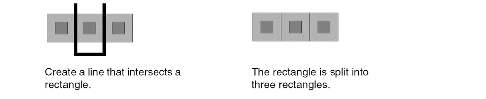
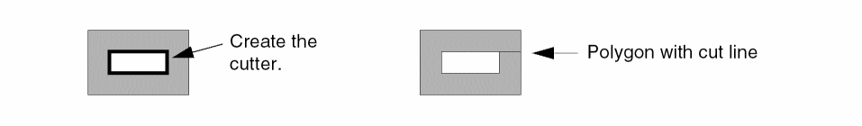
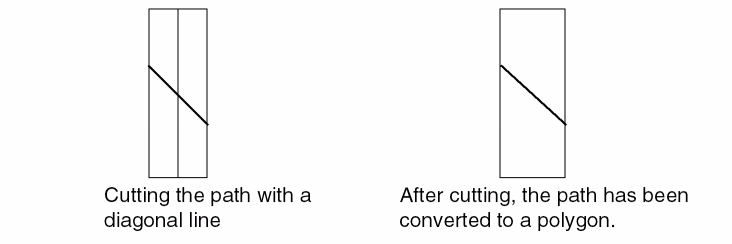

Chopping an Object
To cut away part of an object:
- In the layout window, choose Edit – Basic – Chop.
-
Press
F3to open the Chop form. -
Set Chop Shape to rectangle, line, or polygon.
If you select line or polygon, set the Snap Mode. - You can split an object by deselecting the Remove chop check box and using a rectangle or polygon chop shape. This saves both the area you cut and the original objects.
- Select one or more objects on the canvas.
-
Click to specify the points of the chop.
-
Depending on the options that are set, the object area is cut away or the object is split.
-
If you cut a hole in an object, it is redrawn as a polygon with a cut line.
- Paths convert to polygons when Chop Shape is set to polygon or line and Snap Mode is set to anyAngle or diagonal.
-
If you cut a path with a diagonal line, the resulting object is a polygon.
-
Depending on the options that are set, the object area is cut away or the object is split.
The Chop command preserves selections even in the post-select mode if the retainSelectionSet environment variable is set to t.
Related Topics
Attaching and Detaching Objects
Return to top